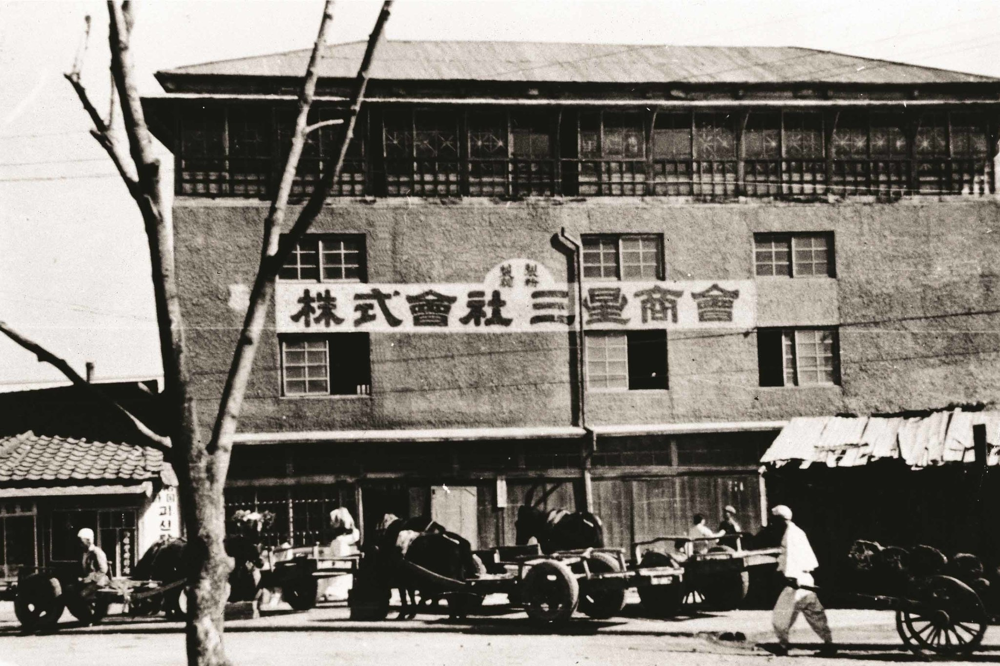
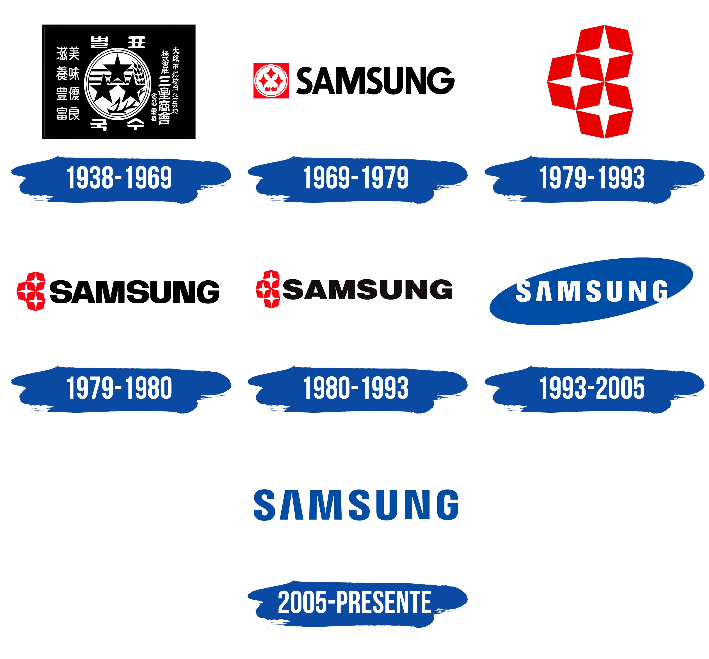

En Samsung tenemos plasmado en el ADN atributos que son parte esencial de nuestra oferta de productos y servicios: innovación, calidad y servicio son factores claves para nosotros y son bien reconocidos por nuestros consumidores. Gracias al éxito en el sector de dispositivos electrónicos, hemos sido reconocidos como un líder a nivel mundial en la industria de la tecnología y ahora somos una de las diez principales marcas del mundo. Hemos construido una cercanía especial desde la comunicación, lo que nos ha brindado consistencia en el tiempo y, por tanto, nos ha permitido hacernos merecedores de la confianza y la preferencia de gran parte de los consumidores. Todo es gracias a ustedes!
NUESTRA
HISTORIA
Samsung, fue fundada como una tienda de comercio de comestibles el 1 de marzo de 1938, por Lee Byung-Chull. Empezó su negocio en Taegu, Corea, comerciando con fideos y otras mercancías producidas en la ciudad y sus alrededores. Después de la Guerra de Corea, Lee amplió su negocio a los textiles y abrió la mayor fábrica de lana de Corea.
En este periodo, se centró en la industrialización con el objetivo de ayudar a su país a re-desarrollarse después de la guerra. Dando un salto temporal hacia delante, ya en la década de 1970 la empresa amplió sus procesos de fabricación de textiles para abarcar toda la línea de producción, desde las materias primas hasta el producto final. Además, durante el mismo período, la empresa comenzó a invertir en las industrias pesada, química y petroquímica.
Samsung entró por primera vez en la industria electrónica en 1969 con varias divisiones centradas en la electrónica (sus primeros productos fueron los televisores en blanco y negro). De este modo, durante la década de 1970, la empresa comenzó a exportar productos de electrónica doméstica al extranjero. Ya en la década de 1990, la historia de Samsung continuó e hizo su expansión en los mercados electrónicos mundiales. En el decenio de 2000 se produjo el nacimiento de la serie de teléfonos inteligentes Galaxy de Samsung, que rápidamente no sólo se convirtió en el producto más valorado de la empresa, sino que también encabezó con frecuencia las listas anuales de los teléfonos inteligentes más vendidos en el mundo.
